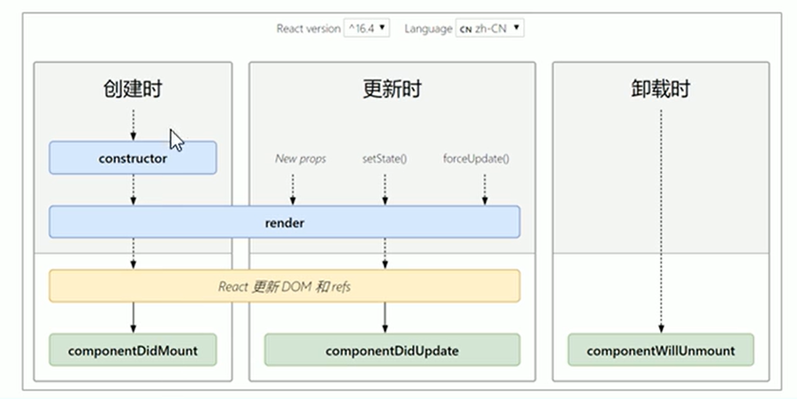

组件的生命周期概述
- 意义:组件的生命周期有助于理解组件的运行方式、完成更复杂的组件功能、分析组件错误原因等
- 组件的生命周期:组件从被创建到挂载到页面中运行，再到组件不用时卸载的过程
- 生命周期的每个阶段总是伴随着一些方法调用，这些方法就是生命周期的钩子函数
- 钩子函数的作用:为开发人员在不同阶段操作组件提供了时机。
- 只有 类组件 才有生命周期
生命周期的三个阶段
1.每个阶段的执行时机
2.每个阶段钩子函数的执行顺序
3.每个阶段钩子函数的作用

创建时（挂载阶段）
执行时机：组件创建时（页面加载时）
执行顺序：
1
2
3graph LR
A(constructor) --> B(render);
B(render)-->C(componentDidMount);
| 钩子函数 | 触发时机 | 作用 |
|---|---|---|
| constructor | 创建好组件时，最先执行 | 1.初始化state 2.为事件处理程序绑定this |
| render | 每次组件渲染都会触发 | 渲染UI（注意：不能调用setState()） |
| componentDidMount | 组件挂载（完成DOM渲染）后 | 1.发送网络请求 2.DOM操作 |
1 | import React from 'react'; |


更新时（更新阶段）
执行时机: 1.setState() 2.forceUpdate() 3.组件接收到新的props
说明:以上三者任意一种变化，组件就会重新渲染
执行顺序:
1
2
3
4
5
6
7
8
9
10
11
12
13
14
15
16
17
18
19
20
21
22
23
24
25
26
27
28
29
30
31
32
33
34
35
36
37
38
39
40
41
42
43
44
45
46
47
48
49
50
51
52
53
54graph LR
A(render) --> B(componentDidUpdate);
| 钩子函数 | 触发时机 | 作用 |
| ------------------ | ----------------------- | ------------------------------------------------------------ |
| render | 每次组件渲染都会触发 | 渲染UI(与挂载阶段 是同一个render ) |
| componentDidUpdate | 组件更新(完成DOM渲染)后 | 1 发送网络请求<br/>2 DOM操作<br/>注意:如果要setState() 必须放在一个if条件中 |
```js
import React from 'react';
class Counting extends React.Component{
state = {
flag:1
}
render() {
const {count} = this.props
console.log("子组件---render")
return (
<div>
打豆豆次数：{count}
<div>flag:{this.state.flag}</div>
</div>
);
}
componentDidUpdate(prevprops){
console.log("子组件---componentDidUpdate");
console.log("prevprops",prevprops,"props",this.props) //prevprops {count: 0} props {count: 1}
if(prevprops.count===5){
this.setState({
flag:2
})
}
}
}
export default class Updating extends React.Component{
state = {
count : 0
}
handleClick = () =>{
this.setState ({
count : this.state.count + 1
})
}
render(){
return (
<div>
更新时
<Counting count={this.state.count} />
<button onClick={this.handleClick}>打一次</button>
</div>
)
}
}
卸载时（卸载阶段）
执行时机:组件从页面中消失
| 钩子函数 | 触发时机 | 作用 |
|---|---|---|
| componentWillUnmount | 组件卸载（从页面中消失） | 执行清理工作，比如清理定时器 |